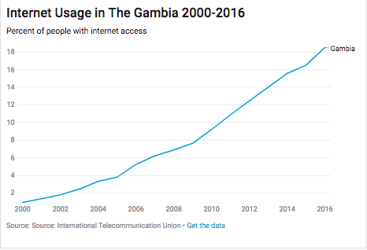
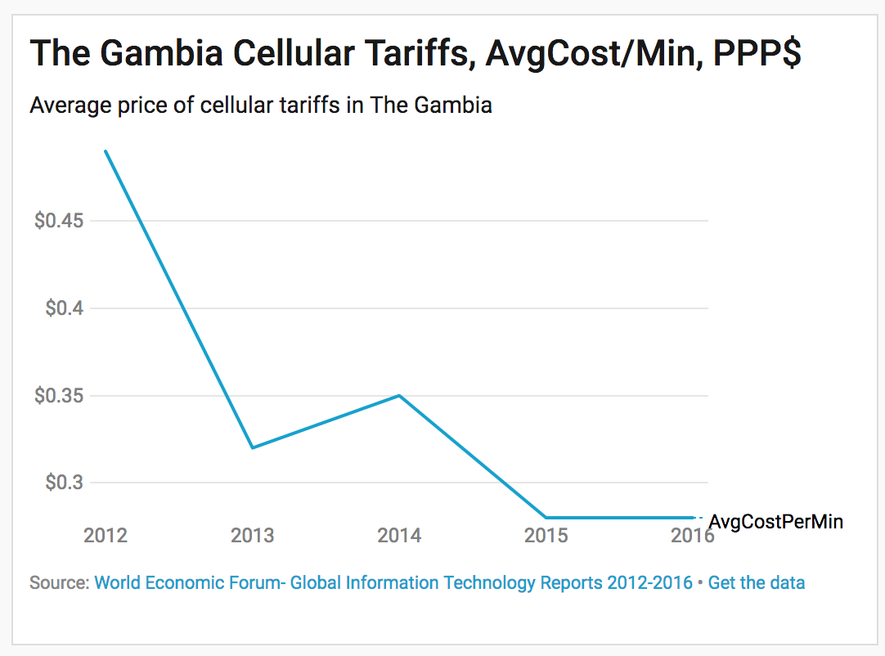
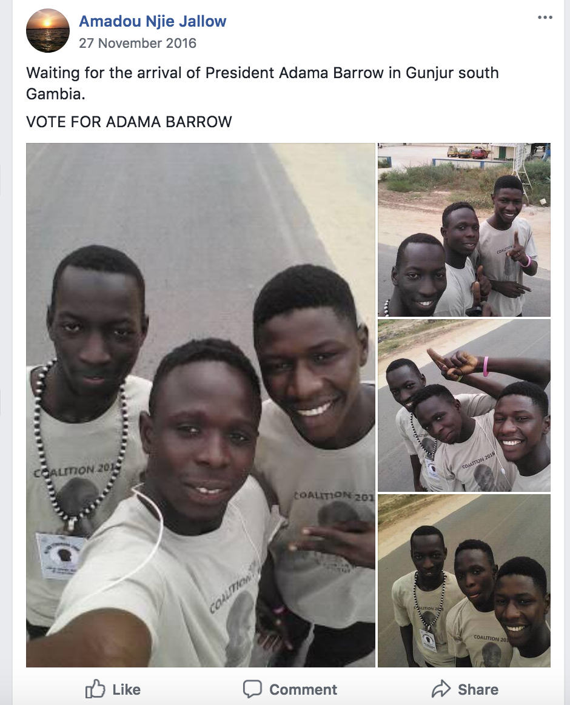
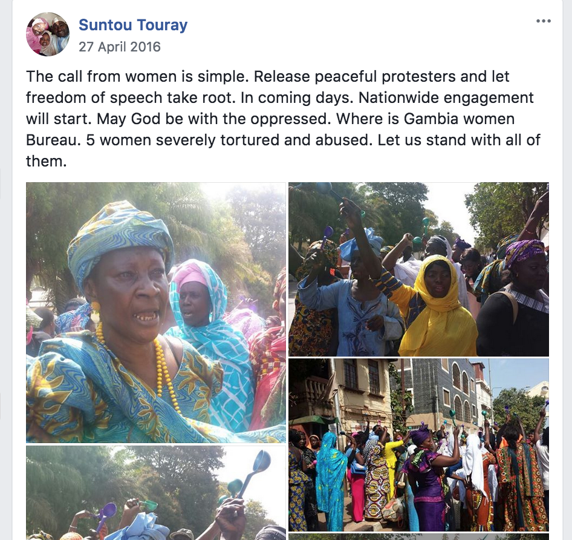
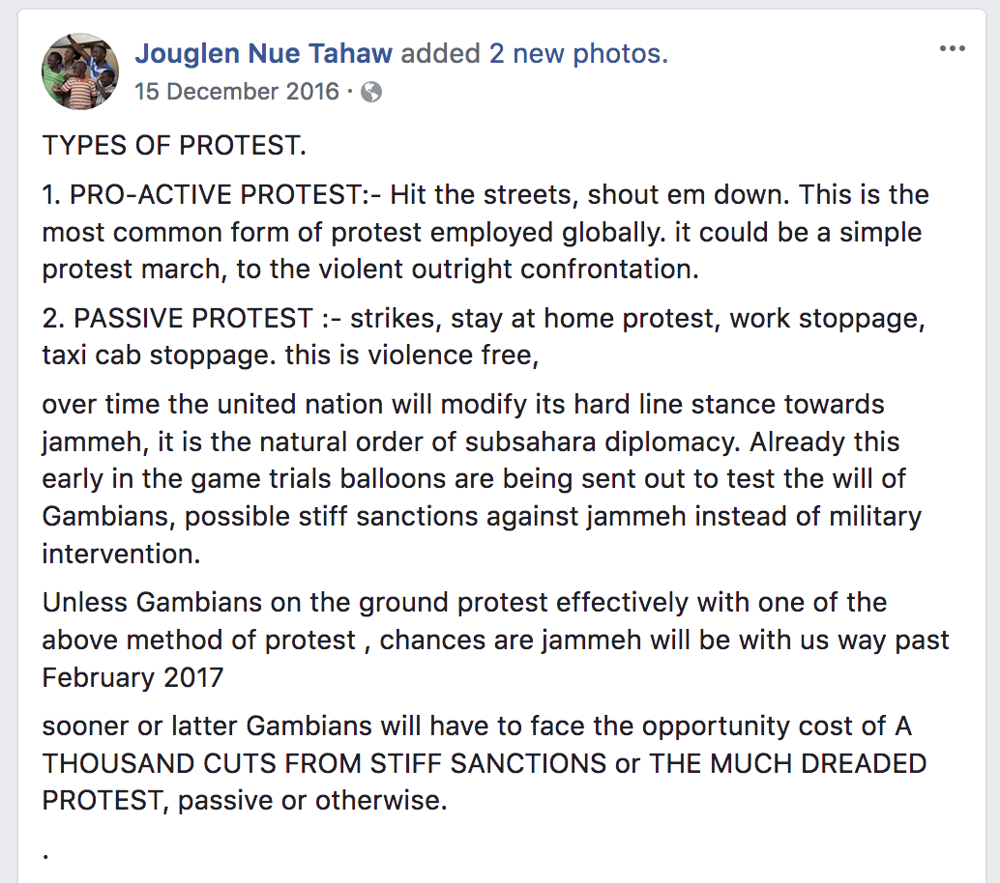
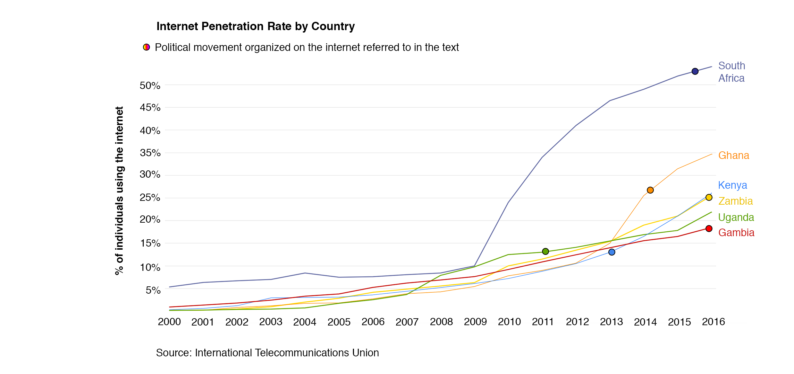

By
Rekha Shanmugam, Adam Muro,
Masahiro Ogamino, Anurag Papolu
“Jammeh knows better that he lost the confidence of the entire populace, he has been red-carded, humiliated and dumbed even before the polls,” read a post to the Gambia Youth and Women’s Forum Facebook page.
Following it were the hashtags #GambiaHasDecided #JammehMustGo.
Though the poster did not know it on January 6, 2017, the nearly 22 year rule of Yahya Jammeh over The Gambia was less than a month away from its end. President in name only, Jammeh governed harshly, and suppressed opposition wherever he could.
The Gambia, the smallest county in West Africa, with a population of only 1.8 million, has only seen the mainstreaming of internet access in the last decade. Since it came to prominence, the first presidential election that occured resulted in the ousting of a long time dictator. There are many who say that this could not have happened without access to WhatsApp, Facebook, and other social media.
Gambia is a particularly interesting example of how increased access to the internet is affecting developing countries.
The Gambia Under Jammeh
In 1994, Yahya Jammeh took control of The Gambia as chair of the Armed Forces Provisional Ruling Council, which toppled the regime of Dawda Jawara in a coup d'etat. The council immediately created a one party state and banned all political opposition activity, which would set the tone for the coming decades.
Two years later, in 1996, Jammeh was elected president. His rule was stamped with all the hallmarks of dictatorship. In 2008, he introduced anti-LGBT laws that he said would be “stricter than those in Iran.” He also stacked the country’s courts with foreign judges that took orders from him and imposed harsh sentences on those he took to be threatening his power.
Jammeh was also famous for his suppression of dissent, both in the press and on the streets. According to Freedom House’s annual report on press freedom, Gambia’s ranking steadily fell during Jammeh’s rule, sliding to its lowest point in 2016. Sentiments were often suppressed and more than 110 journalists went into exile. “Journalists had the worst time under his regime. He sees them as the enemies. He saw them as agents of the West. At one point he even described them as ‘illegitimate sons of Africa’, said Sulayman Makalo, a Gambian journalist and human rights activist and based in Boston.
Similarly, Jammeh also violently suppressed protests. In 2000, he was accused of ordering the shooting deaths of 14 students and a journalist at a protest in the capital city of Banjul. Also, according to newspapers, many people were picked up by plainclothes police and disappeared to prisons, where they were held for years without due process.
In one bizarre episode in 2009, Jammeh even led a literal witch hunt campaign, during which the New York Times reported that dozens of suspected practitioners of witchcraft were arrested and tortured.
“His 22 year regime was characterized by fear, killings, disappearances, people fleeing the country, the country going down economy-wise, and all sorts of laws that were put in place to strengthen his rule,” said Makalo.
The Gambia Gets The Internet
While Jammeh was busy doing all he could to strengthen his position and stifle dissent, a force beyond his control came to greater prominence in The Gambia: the internet.
From 2009-2012, seven undersea fiber optic cables were laid off the coast of Sub-Saharan Africa, bringing a rush of broadband internet connectivity where there previously had been none. Pre-2009, according to a report by the US International Trade Commission, the entire west coast of Africa had been served by a single outdated fiber optic cable that was undependable and prone to outages.
The effects of these new cables were felt rapidly: the percentage of The Gambia’s population that had access to the internet more than doubled in five years, going from 6.88% in 2008 to 14% in 2013. This data was obtained from the International Telecommunications Union, the United Nations’ specialized agency for information and communication technologies. It is based on reports from the Gambian government as well as its own estimates.

Demba Kandeh, a lecturer at the School of Journalism and Digital Media at the University of Gambia, says these numbers may be underestimated.
“What is important in the context of Gambia is that, this is a communal society,” he said. “For example if I live in a joint family of around 15 people, which is the average, and one or two people have access to internet on the mobile phone, most of the family will use the same device.”
Internet use has continued to increase since the introduction of the undersea cables, and barriers, such as the cost of access, have fallen. Where the press was stifled, the internet was used to foment a growing political opposition in The Gambia.

Exiled activists, journalists, and members of the large Gambian diaspora started Whatsapp groups, Facebook pages, Youtube channels, websites and blogs. Local activists helped people organize on a smaller level by tying these messages to the local candidates.
“At the time Gambia was politically a very very difficult environment for journalists and activists. And so the opposition groups had to meet discreetly. A lot of the activities were hidden, so the only activism that you could see was what was shared online,” said Kambeh.
“All this had a large impact on political discussion because Jammeh had complete control over the national media. The few private radio stations were not allowed to broadcast the news,” he said.
Facebook groups which were highly active during the year before the election are indicative of how exactly social media was used.
“When Adama Barrow was campaigning, he visited a remote village and held a meeting with the villagers there, and one of the village elders said to Barrow, ‘Mr. Barrow, you don’t have to come all the way here to tell us these things, we have Whatsapp now,” said Sanna Camara, a journalist based in Banjul, Gambia, who witnessed the campaigning.
Here are several screenshots of facebook posts from various Facebook groups.



The Larger Picture
Gambia’s example is not an isolated incident.
Over the last decade, sub-Saharan Africa has seen innovations in citizen participation in governance that have relied on social media and increased internet access to get off the ground.
Uganda was one of the first to participate in the trend. In 2011, the massive ‘Walk to Work’ protests occurred in response to spiraling food and fuel prices. Largely organized on social media, they continued to gain momentum and eventually resulted in a harsh crackdown from president Yoweri Museveni.
At one point, the national media was even barred from live coverage of ‘Walk to Work’. Ugandans and the world at large found social media as the only way to get updates on the protests, and the hundreds arrested.
Similar events occured in Ghana in 2014, when the largest anti-government protests in a decade occurred against poor standards of living. Previously, protests were largely isolated to unions and the extreme poor, but the reach of social media platforms Facebook and Whatsapp allowed the specific demands of the younger generation (high youth unemployment) to be integrated into the larger movement.
In South Africa in 2015 and 2016, students united under the hashtag #FeesMustFall to protest university tuition increases. They eventually secured concessions from the former president Jacob Zuma in the form a 10.7 percent increase in government subsidies for universities.
Citizens in Zambia utilized the internet and social media in its politics in a different way, by conducting election monitoring of polling places via Facebook. They were also able to share information from groups that were conducting independent tabulation of votes, the results of which closely mirrored official records.
Citizens in Zambia utilized the internet and social media in its politics in a different way, by conducting election monitoring of polling places via Facebook. They were also able to share information from groups that were conducting independent tabulation of votes, the results of which closely mirrored official records.

The Gambian Diaspora
The Gambian diaspora was so influential in this process, that activist politicians went to places with large concentrations of Gambians abroad, from Dakar to New York, to campaign. Gambian politicians canvassed for votes in these places, even though Gambians abroad cannot vote. “They wanted them to talk to their people back home directly,” says Kandeh.
Momodou Jallow who runs a DVD shop in Harlem, left Gambia 28 years ago, and has been living in New York City since. “People In Gambia felt like they couldn’t speak about what they saw or what they heard,” he said, “So we, in the diaspora saw the freedom people have elsewhere, and told our families and friends to change the situation in Gambia.”
That it was impossible for the Gambian diaspora to return to their country for as long as Jammeh was in power, gave them all the more reason to be heavily invested in the elections and campaigning.
“Many of the people who left The Gambia during Jammeh’s rule left because they were not happy under his rule, or were forced out by him.” said Camara. “If they wanted to see their families, they had to meet their relatives in neighbouring Senegal, but not in the Gambia.”
Even before local Gambians began to use the internet as a political tool, the diaspora recognized its potential and wanted to tap it, according to Makalo. “The young people were not engaged in politics that much because of the fear of the Jammeh regime.” he said, but the diaspora had the freedom to express their dissent abroad. The execution of nine prison inmates in 2012 first triggered an uproar in the diaspora, and people talked about it online. Videos of the diaspora protesting during Jammeh’s international visits were circulated online. These things had a profound influence on the people in the Gambia.
The first of December 2016 was a significant day in the history of The Gambia. The country went to polls with Adama Barrow of the United Democratic Party defeating long-time incumbent Yahya Jammeh. It marked a big day for democracy in the country, marking the very first transfer of power by popular vote since independence from the United Kingdom in 1965.
Fearing the potential of social media to turn around the results, internet was switched off in the country on the eve of the elections. In fact, on the days leading up to the election, speculations had been rife that this may happen, as the phenomenon isn’t particularly new to the continent.
This move was met with stiff resistance, especially from the younger social-media-aware demographic. “On election night, everything was blocked out,” says Kandeh. Social media could not be accessed. Even international calls could not be made. We were completely isolated from the rest of the world.”
“That’s one mistake they made, shutting the internet down. If you look at Egypt, the reason why the Egyptian revolution succeeded is because of the social media shut down, When they shut it down, people started questioning what was going on. When the revolution started, the organizers were not that hopeful, but when the government shut the internet down, the people wanted to find out what was going on and that is how the protest started,” said Makalo.
Despite the surprise results, The Gambia is still vulnerable to the threat of internet shutdowns, and policies which make it harder to gain internet access, as the government controls all the infrastructure.
Kambeh thinks that if the elections had been held five years earlier, the result would have been completely different. “A lot of things that were possible in 2016 were not possible in 2011 for example. Even I was surprised that we were able to pull off the results that we did, to defeat him at the ballot box. This is largely because of the level of organization possible through technology,” he said.
Today, people are using social media to not just discuss politics, but also to coordinate local community projects. Jallow, the New York resident, is part of a Whatsapp group called Brikama, named after his hometown. Gambians coordinate with members of the diaspora to send food from abroad to one of Brikama’s mosques, where it is distributed to the locals.
“If our country is to succeed, then we must keep working to develop it, we must not stop, and Whatsapp and Facebook help us in some ways to do that,” said Jallow.
Camara himself is a member of his village’s local development association. “We are using it to harness the potential of the diaspora and locals working together. We are currently coordinating the construction of a new market in the village,” he said.
Sources
Demba Kandeh: A Gambian journalist and blogger. Has worked in The Gambia’s ‘difficult’ media environment since 2007. Passionate about the intersection between Information Communication Technologies (ICTs) and politics, locally and globally.
Sulayman Makalo: Gambian Journalist and Human Rights Activist based in Boston
Sanna Camara: Gambian journalist based in Banjul, Gambia